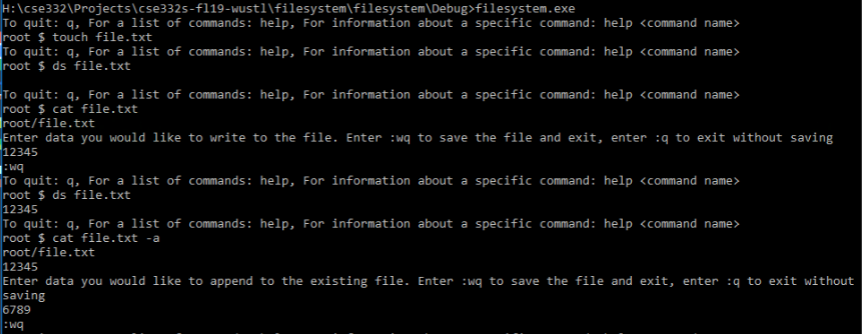

About Me

Hi, I'm Young (He/Him), an undergraduate student pursuing a B.S. in Compouter Science and Financial
Engineering at Washington University in St. Louis. Since I can remember, I have always had an affinity for
solving complex-problems involving numbers. This drew me to exploring the field of computer programming, mathematics,
and finance. With my passion in these areas, I am interested in pursuing a career that lies in the intersection
of finance and software development.
Apart from my career and academic interests, I love video editing, photography, reading, traveling,
basketball, and the gym. Feel free to send me a message if you want to chat!
Work Experience
Research Assistant (January 2022 - Present)
I am currently a research assistant at the computer security and privacy laboratory at Washington University in St. Louis. Before the Summer of 2022, I was asked to conduct independent research by doing preliminary studies on the adversarial attacks of autonomous vehicles. This included reviewing literature on existing work and understanding the exposure sequence of mainstream HDR (high dynamic range) algorithms to identify possible vulnerabilities of the camera sensors in the vehicles. For the Summer of 2022, I was selected as 1 of the 17 participants in the Washington University Research for Undergraduate (REU) program in the CS department. I assisted in completing the set up of xvector-PLDA, yvector-PLDA, and GMM-PLDA speech recognition systems (SRS) by setting up the conda environment and adapting the original Python scripts to extract decision results and scores of the enrolled speakers. This included navigating dependency issues with the required packages and understanding the codebase. Since I was asked to set up the SRSs based on a repository that focused on launching adversarial attacks on the SRSs, I had to write a Python script that extracted the accuracy of the SRSs based on the decision/scores of the pretrained model.
Teaching Assistant (September 2021 - Present)
I am currently serving as the teaching assistant for the data structure and algorithm
(CSE247) class at Washington University. My responsibilities include managing a lab with 50+ students, hosting weekly
office hours, proctoring exams, and grading weekly assessments. During lab sessions, I would assist students by
clarifying lab instructions and explaining lecture concepts. Additionally, I would offer students advice on how to
debug their code during office hours. This class covers challenging concepts like ordered collections, greedy/sorting
algorithms, and run-time complexity analysis.
Academic Tutor (September 2021 - December 2021)
I served as the tutor for Engineering Student Services at my school to help students that
have no prior experience in coding. This includes introducing fundamental programming concepts like recursion,
linear data structures, and object-oriented programming. Moreover, I also offered clear alternatives to assist students
in debugging convoluted code. During exam weeks, I would assist students in reviewing by explaining core concepts and
clarifying challenging questions in the mock exam.
Projects

E-Commerce Website (JavaScript, React, Django, PostgreSQL)
I built a full-stack e-commerce website with React, Django, and PostgreSQL that includes ten separate features that allows users to browse and purchase products with ease. This includes a full-featured shopping cart that allows buyers to review their products before their purchase. They would also be able to submit reviews/ratings of the products, which is displayed in the product page. Additionally, I also created a search bar that would allow users to search for products. To help navigate the website, I also implemented product pagination and product carousels that would help sort the products by ratings. I also granted administrators the power to manage products, users, and orders.
For this project, I used React and React Bootstrap to build out the frontend. When I was building out the backend, I noticed the amount of repetitive code that I was writing. As a result, I ended up using Django because of its scalability, and also how clean it makes the code. I used PostgreSQL as the database to store user, product, review, order, order item, and shipping address information. Additionally, I also used the PayPal API to build out the checkout process.
Multi-Room Chat Server (JavaScript, Node.js, Socket.IO)
I developed a multi-room chat server that allowed users to create and join different chat rooms. The entire application is displayed on a single webpage. As a creator of the room, one can temporarily kick users out of the room, permanently ban users from joining that particular room, transfer ownership of the room, and disband the chat room completely. Additionally, users also have the option to create private rooms, which will require password authentication when others try joining them.
The server was built by leveraging Node.js as the runtime environment. This allows the server to handle heavy input-output operations because of its asynchronous nature. I also used Socket.IO to establish a WebSocket connection that enables real-time, bidirectional communication between the server and the client.
File System Simulation (C++)
This project is a software simulation of a file system by implementing user interface
similar to a command prompt. Through the implemnetation of eight unique commands, users are able to interact with
the file system by accessing and modifying the files it contains. This program can be accessed through command
prompt (Windows) or terminal (iOS).
Throughout the process, I utilized object-oriented design principles and patterns to eliminate redundant code
and increase code flexibility. This was made possible by using interface inheritance, abstract factory
design pattern, prototype pattern, composite pattern, command pattern, and more to create this file simulation.
Skills

Programming Langauges: Java, Python, C++, JavaScript, Bash, HTML, CSS, PHP, SQL
Libraries/Frameworks: React, Node.js, NumPy, Pandas, Sklearn, Django
Tools: Conda, Git, Socket.IO, Linux, MySQL, PostgreSQL
Languages: English, Mandarin
Contact
Email: chih-yang.l@wustl.edu